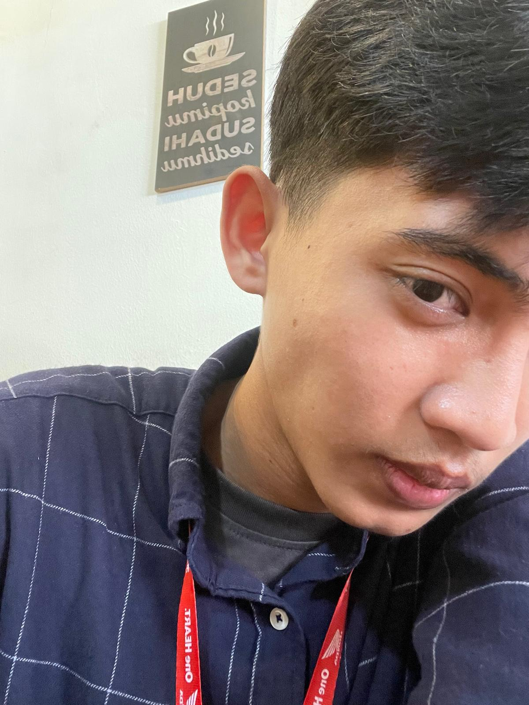

Laporan praktikum Python
Menyusun laporan mingguan Algoritma dan Pemrograman, termasuk materi List dan Fungsi.
Halo, Selamat Datang!
Belajar, berkarya, dan berbagi.
Mahasiswa Sistem Informasi, FMIPA, Universitas Tanjungpura, Pontianak. Saya sedang belajar membangun sistem & aplikasi yang berguna bagi orang banyak.
Saya Arsha, mahasiswa baru Sistem Informasi di Universitas Tanjungpura. Saya tertarik pada cara teknologi membantu pekerjaan sehari-hari, mulai dari logika pemrograman sampai tampilan aplikasi.
Website ini saya buat untuk memperkenalkan diri kepada teman-teman mahasiswa baru: siapa saya, apa yang sedang saya pelajari, dan apa yang sudah saya kerjakan.
Universitas Tanjungpura, Pontianak Kota, Kalimantan Barat.
Jln. Abdurahman No.10, Kecamatan Putussibau Utara, Kabupaten Kapuas Hulu, Kalimantan Barat.
Jln. Ampera, Sungai Jawi, Kecamatan Pontianak Kota, Kalimantan Barat.
Angka hanya perkiraan pribadi.
Menyusun laporan mingguan Algoritma dan Pemrograman, termasuk materi List dan Fungsi.
Membuat PPT bersama tim untuk mata kuliah Pengantar Teknologi dan Sistem Informasi.
Banyak, jadi orang sibuk.
Kebanyakan, Tidak bisa dituliskan satu-persatu.

Kamu mahasiswa baru Untan? Sapa saya lewat salah satu kontak ini.